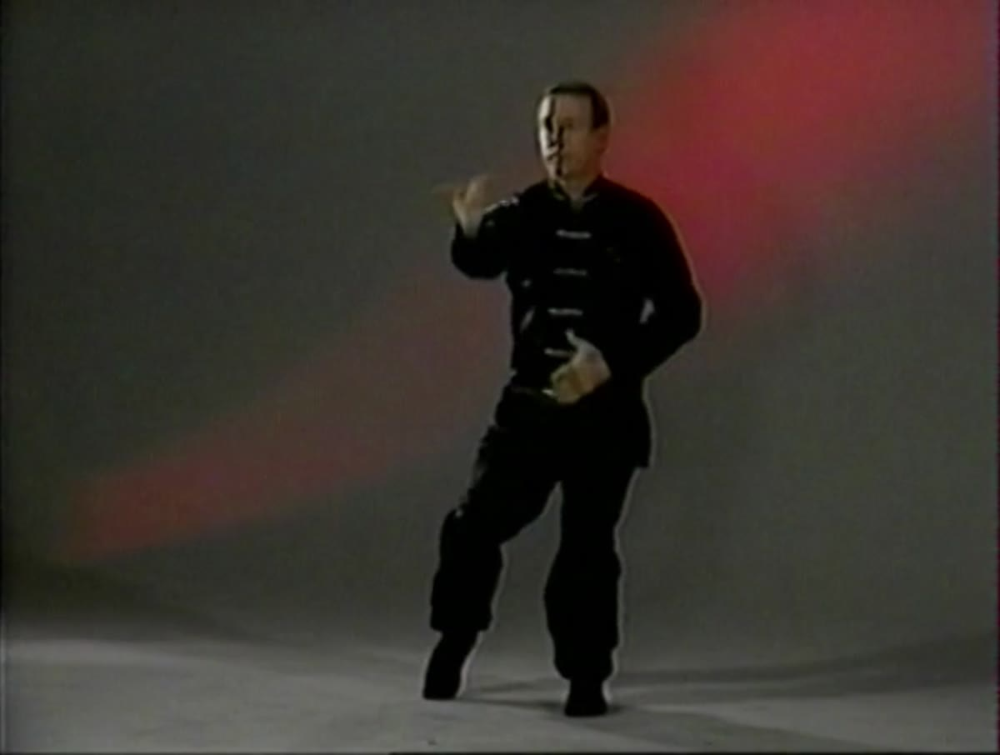

The Systems · Internal
Chen Style Taijiquan · The Original Form
Photo
The Systems · Internal
Chen is the oldest of the Tai-Chi families and the one the others came from. It is also the one that kept its teeth. The slow, even practice most people picture when they hear "tai chi" is present here, but so is the sharp release of power the later styles largely smoothed away.
What we teach is the original thirteen postures expressed through sixty-four movements — an older and more compact curriculum than the long forms popularised in the twentieth century. Master Pan Wing-Chow, who carried this material in our lineage, was known specifically for preserving the form rather than modernising it.
The engine of Chen is chan ssu jin, silk-reeling energy — a continuous spiralling that runs through the whole body rather than a sequence of separate movements. The image is drawing silk from a cocoon: pull unevenly and the thread snaps, pull too slowly and it tangles. Only smooth, unbroken, precisely-tensioned movement works.
Trained correctly, that spiral circles the meridians and produces power out of all proportion to the effort visible from outside. It is also the hardest thing in the system to fake. A student can memorise the sequence in months; making the spiral real takes years of correction that has to happen in person.
Out of the silk-reeling comes fa-jin — the abrupt discharge of stored power that gives Chen its distinctive punctuation. It cannot be trained in isolation or bolted onto a form that lacks the underlying connection. It arrives, when it arrives, as a consequence of structure.
For all its martial content, the daily experience of Chen practice is meditative. Breath, intention, and movement gradually stop being three things you coordinate and become one thing you do. Students who come for health rather than fighting lose nothing by that; the mechanics that make the art effective are the same ones that make it good for the body.